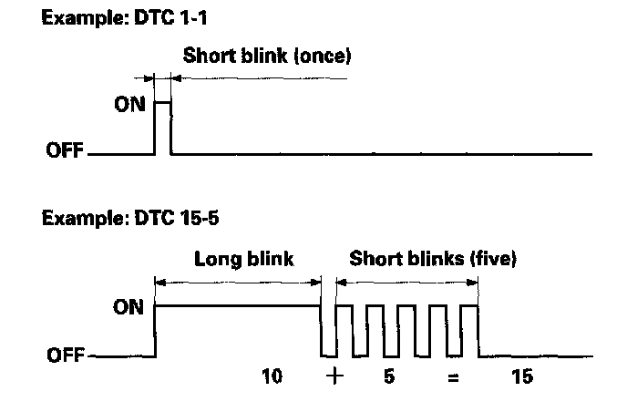

How to Check For DTCs With the SCS Mode (Retrieving the Flash Codes)
How to Check for DTCs with the SCS Mode (retrieving the flash codes)NOTE: The preferred method is to use the HDS to retrieve the P-code.
When the PCM senses an abnormality in the input or output system, the D indicator (A) in the gauge assembly (B) will usually blink.
When the D indicator has been reported on, connect the HDS to the DLC (A) (located behind the driver's dashboard lower cover). Turn the ignition switch ON (II), select SCS mode, then the D indicator will indicate flash the DTC.
If the D indicator and the MIL come on at the same time, or if a driveability problem is suspected, follow this procedure:
1. Connect the HDS to the DLC. (See the HDS user's manual for specific instructions.)
2. Turn the ignition switch ON (II), select SCS mode, then observe the D indicator in the gauge assembly.
Codes 1 through 9 are indicated by individual short blinks. Code 10 and above are indicated by a series of long and short blinks. One long blink equals 10 short blinks. Add the long and short blinks together to determine the code.

3. Record all fuel and emissions DTCs and A/T DTCs.
4. If there is a fuel and emissions DTC, first check the fuel and emissions system as indicated by the DTC (except DTC 70, DTC 70 means there is one or more A/T DTCs, and no problems were detected in the fuel and emissions circuit of the PCM).
5. Clear the DTC and data.
6. Drive the vehicle for several minutes under the same conditions as those indicated by the freeze data, and then recheck for DTC. If the A/T DTC returns, go to the indicated DTC's troubleshooting. If the DTC does not return, there was an intermittent problem within the circuit. Make sure all pins and terminals in the circuit are tight.